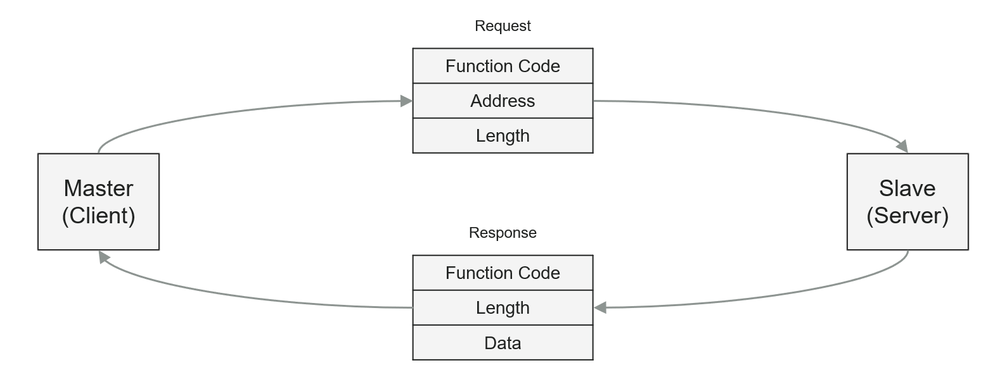

Modbus Usage Notes
Modbus Usage Notes — Detailed information about the Modbus protocol and the Modbus blockset
Introduction to Modbus
Modbus communication protocol that allows interoperability between components mostly in electric grids and automation plants. These components are either client or server. One client accesses multiple servers to read and write data that the server manages in 4 data tables:
Coils (bit values the client can read and write)
Discrete Inputs (bit values the client can only read)
Holding Registers (word values the client can read and write)
Input Registers (word values the client can only read)
Modbus TCP is a TCP/IP-based protocol. In Modbus TCP networks, each physical device has a unique IP address. Servers normally listen on TCP port 502 for incoming connection requests from clients. TCP port numbers on the client side are random.
Modbus RTU is a widely used serial communication protocol. It operates over RS-485 (or sometimes RS-232) serial interfaces. In Modbus RTU, data is transmitted in binary format, making it fast and reliable for communication between devices such as programmable logic controllers (PLCs) and sensors.
For further information about the Modbus protocol, refer to the official online Modbus documentation.
Runtime License
Modbus blocks require a runtime license installed on the target machine. Please refer to the Runtime Licensing help.
Typical Target Machine Configurations - for Modbus TCP
For Modbus TCP communication with Speedgoat target machines, you can use onboard Ethernet interfaces and plug-in Ethernet I/O modules.
Use the Ethernet Configuration Tool to assign IP addresses to these Ethernet interfaces. Enter the following in the MATLAB command window to open the tool:
>> speedgoat.configureEthernet

For Modbus TCP, you can use any Ethernet interface when Configuration is set to IP Protocols.
One real-time target machine can perform multiple Modbus TCP clients and servers. There are four possible configurations:
- One IP Address per Ethernet Interface
One IP address is assigned to one Ethernet interface. This Ethernet interface acts as either one Modbus TCP client or one Modbus TCP server in the network. You can install multiple Ethernet I/O modules (providing up to 4 interfaces each) or use additional onboard Ethernet interfaces to set up multiple Modbus TCP clients or servers. As all the Ethernet interfaces of a target machine must be associated with different Ethernet subnets, each Modbus TCP station must operate in another Ethernet network. If an application requires multiple clients to communicate with different Modbus TCP networks, then this target configuration is the correct choice. In contrast, if the simulation of a Modbus TCP network with multiple servers is required, this setup cannot be used.
The subnet dedication of an Ethernet interface is defined by IP address and subnet mask.
- Multiple IP Addresses per Ethernet Interface (IP Aliasing)
IP aliasing can be used to assign multiple IP addresses to a single physical interface. This allows multiple Modbus TCP clients and servers to be operated on the same Ethernet I/O module or the same onboard Ethernet interface. As the related IP addresses are always associated with the same Ethernet subnet, this configuration is ideal for simulating a Modbus TCP network containing multiple servers. Even mixed operation (client and server) is possible for the purpose of loopback testing. Alias addresses can be configured in the advanced settings of the Ethernet Configuration Tool or by functions.
Enter the following in the MATLAB command window to manage IP aliasing:
>> ipAliasObj = speedgoat.IpAliasConfiguration() >> ipAliasObj.add('ETH2', {'192.168.10.31','192.168.10.32','192.168.10.33'}) >> ipAliasObj.remove('ETH2', {'192.168.10.33'}) >> ipAliasObj.add('Host Link', {'192.168.1.15','192.168.1.19'})Enter the following in the MATLAB command window to check the available Ethernet interfaces and configured IP aliases:
>> ipAliasObj.show() Interface Name IP Address Subnet Mask --------------- --------------- --------------- ETH2 192.168.10.1 255.255.255.0 192.168.10.31 255.255.255.255 192.168.10.32 255.255.255.255 192.168.10.33 255.255.255.255 Host Link 192.168.1.14 255.255.255.0 192.168.1.15 255.255.255.255 192.168.1.19 255.255.255.255- Multiple TCP Ports per IP Address
This is the normal operation for clients as each connection of the client to a server requires a separate TCP port.
For server simulation, you can ignore the default server port 502 and allow multiple servers to listen on different TCP ports. All these servers will then act in the same subnet.
Typical Serial I/O Module Configuration - for Modbus RTU
- The following values represent the standard settings for a serial interface defined by the Modbus normative.
Parameters Default Value Description Physical Interface RS485 Half-Duplex The most common physical interface for Modbus RTU is RS485 Half-Duplex. Data Bits 8 Define how many bits come after the start bit Parity Check Even The parity bit is used to identify transmission errors. Parity checking reveals if a payload has changed since sending. Stop Bit 1 Sets the last bit after the parity bit
Modbus Data Exchange
Modbus data is exchanged in request-response fashion. The client sends a request frame to the server. The server sends a response frame to the client. The server is not allowed to send data autonomously.
The client request consists of
a function code
the address of the data within the data table
the number of elements

For read requests, the server sends a response to the client which contains the original function code and the data which has been requested. For write requests the server sends a simple confirmation containing the function code.
The following function codes are supported by the Speedgoat Modbus blocks:
FC1
FC2
FC3
FC4
FC5
FC6
FC15
FC16
In addition to the above list, the Modbus RTU Server also supports the diagnostics FC8 with Subfunction 00.
Depending on the data area, there are two types of address and length information:
Coils/Discrete Inputs: Bit address, Number of bits (bit-based)
Holding Registers/Input Registers: Word address, Number of words (16 bit-based)
In the following tables you can see how the four data tables are structured and how bit- and word-addressing works. The Modbus addresses 0XXXX, 1XXXX, 3XXXX and 4XXXX are still commonly used to label Modbus TCP registers. They have been taken over from serial Modbus RTU but serve no purpose in Modbus TCP addressing.
FC1 (Read Multiple Coils):
The function code can read the status coils. The request message specifies the starting address, meaning the Index of the first coil specified, and the Quantity of coils. In the message, Coils are addressed starting at zero. Therefore the coils numbered 1-16 are addressed as 0-15.
FC2 (Read Multiple Discrete Inputs)
This function code is used for reading from contiguous discrete inputs. The request message specifies the starting Index, for example, the address of the first input specified, and the Quantity of inputs. In the message, Discrete Inputs are addressed starting at zero. Therefore the discrete inputs numbered 1-16 are addressed as 0-15.
FC3 (Read Multiple Holding Registers)
The function code is used for reading the content of a contiguous block of holding registers. The request message specifies the starting register Index and the Quantity of registers. In the message, Registers are addressed starting at zero. Therefore the registers numbered as 1-16 are addressed as 0-15.
FC4 (Read Multiple Input Registers)
The function code is used for reading contiguous input registers. The request message specifies the starting register Index and the Quantity of registers. In the message, Registers are addressed starting at zero. Therefore the input registers numbered 1-16 are addressed as 0-15.
FC5 (Write Single Coil)
This function code is used to write a single output to either On or Off. The requested On/Off state is specified by a constant in the request data field. A value of 0xFF00 requests the output to be On. A value of 0x0000 requests it to be Off. All the other values serve no purpose and will not affect the output. Coils are addressed starting at zero. Therefore the coil numbered 1 is addressed as 0.
FC6 (Write Single Holding Register)
This function code is used to write a single holding register. The request message specifies the Index of the register to be written. Registers are addressed starting at zero. Therefore the register numbered 1 is addressed as 0.
FC15 (Write Multiple Coils)
This function code is used to force each coil in a sequence of coils to either On or Off. The request message specifies the coil references to be forced. Coils are addressed starting at zero. Therefore the coil numbered 1 is addressed as 0.
FC16 (Write Multiple Holding Registers)
This function code is used to write a block of contiguous registers. Data is packed as two bytes per register (for example, 0xF5A1 - 16 bits).
Exception Responses
- In a normal response the server answers with the same function code as in the request message. The indication of a present exception response means that the server answer contains the function code but with its highest bit set. All function codes have 0 for their most significant bit. Therefore, setting this bit to 1 will indicate that the server cannot process the request.
Function Code in Request Message Function Code in Exception Response Message 01 / 0x01 / 0000 0001b 129 / 0x81 / 1000 0001b 02 / 0x02 / 0000 0010b 130 / 0x82 / 1000 0010b 03 / 0x03 / 0000 0011b 131 / 0x83 / 1000 0011b 04 / 0x04 / 0000 0100b 132 / 0x84 / 1000 0100b 05 / 0x05 / 0000 0101b 133 / 0x85 / 1000 0101b 06 / 0x06 / 0000 0110b 134 / 0x86 / 1000 0110b 15 / 0x0F / 0000 1111b 143 / 0x8F / 1000 1111b 16 / 0x10 / 0001 0000b 144 / 0x90 / 1001 0000b
- The exception message contains the function code, and the exception code. The exception code indicates the possible cause of the problem.
Exception Code Issue Explanation 01 / 0x01 Illegal Function Code The function code is unknown by the server. 02 / 0x02 Illegal Data Address The data address received in the query is not permitted by the server. More specifically, the combination of reference number and transfer length is invalid. 03 / 0x03 Illegal Data Value A value contained in the query data field is not a permitted value for the server. This indicates a fault in the structure of the remainder of a complex request. It is likely that the implied length is incorrect. 04 / 0x04 Server Device Failure An unrecoverable error occurred while the server was attempting to perform the requested action. 05 / 0x05 Acknowledge The server accepted the service invocation but the service requires a relatively long time to execute. The server therefore only returns an acknowledgement of the service invocation receipt. 06 / 0x06 Server Busy The server was unable to accept the Modbus request payload. The client application is responsible for deciding if and when to resend the request. 07 / 0x07 Negative Acknowledge The server cannot perform the program function received in the query. This code is returned for an unsuccessful programming request using function code 13 or 14 decimal. The client should request diagnostic or error information from the server. 08 / 0x08 Memory Parity Error Specialized use in conjunction with function codes 20 and 21, and reference type 6, to indicate that the extended file area failed to pass a consistency check. The server attempted to read extended memory or a record file, but detected a parity error in the memory. The client can try to resend the request, but the service may be required on the server. 10 / 0x0A Gateway Path Error Gateway paths not available. Specialized use in conjunction with gateways, indicates that the gateway was unable to allocate an internal communication path from the input port to the output port for processing the request. Usually this means the gateway is misconfigured or overloaded. 11 / 0x0B Gateway Device Error The targeted device failed to respond. Specialized use in conjunction with gateways, indicates that no response was obtained from the target device. Usually this means that the device is not present on the network. The gateway generates this exception.